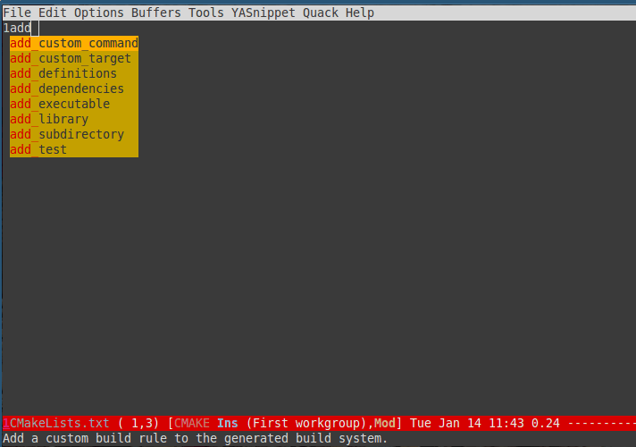

The minimum .emacs for debug purpose
I've installed more than 100 emacs plugins.
Here is my minimum .emacs to test plugins,
(show-paren-mode 1)
(eval-when-compile (require 'cl))
;; test elisps download from internet here
(setq test-elisp-dir "~/test-elisp/")
(if (not (file-exists-p (expand-file-name test-elisp-dir)))
(make-directory (expand-file-name test-elisp-dir)))
(setq load-path
(append
(loop for dir in (directory-files test-elisp-dir)
unless (string-match "^\\." dir)
collecting (expand-file-name (concat test-elisp-dir dir)))
load-path))
;; package repositories
(require 'package)
(add-to-list 'package-archives '("marmalade" . "http://marmalade-repo.org/packages/") t)
(add-to-list 'package-archives '("melpa" . "http://melpa.milkbox.net/packages/") t)
(package-initialize)
;; ==== put your code below this line!
;;
The code is straight forward. I scan any sub-directories in ~/test-elisp and add them into load-path.
I've uploaded the .emacs to Dropbox, so you can use one bash liner to download it:
cd ~/;wget https://dl.dropboxusercontent.com/u/858862/emacs/.emacs;mkdir -p ~/test-elisp;
How to use keyboard to navigate feedly.com
Here is the detailed steps,
- Install keysnail (a firefox addon)
- Install HoK (no less than version 1.3.9) through keysnail
- Add below code into .keysnail.js
/* HoK / key.setViewKey('e', function (aEvent, aArg) { ext.exec("hok-start-foreground-mode", aArg); }, 'Hok - Foreground hint mode', true);key.setViewKey('E', function (aEvent, aArg) { ext.exec("hok-start-background-mode", aArg); }, 'HoK - Background hint mode', true);
key.setViewKey(';', function (aEvent, aArg) { ext.exec("hok-start-extended-mode", aArg); }, 'HoK - Extented hint mode', true);
key.setViewKey(['C-c', 'C-e'], function (aEvent, aArg) { ext.exec("hok-start-continuous-mode", aArg); }, 'Start continuous HaH', true);
hook.addToHook('PluginLoaded', function () { if (!plugins.hok) return;
/ HoK 1.3.9+ requried / plugins.hok.pOptions.selector = plugins.hok.pOptions.selector / feedly / + ", [data-uri]" + ", [data-selector-toggle]" + ", [data-page-action]" + ", [data-app-action]" ; });
- Restart Firefox, logged into http://www.feedly.com and press hot key "e"
- Enjoy!
How to use yasnippets to produce email templates in Emacs
CREATED:
UPDATED:
Problem
As a freelancer, I need reply agent's email frequently.
So I have several issues to resolve:
- Avoid writing multiple mails with similar content
- Avoid attaching same resume again and again
- Get the agent's name right. This is not easy since I'm living in Sydney
Solution
Yasnippet is the best solution for email templates because you can embed Lisp code in the template.
Templates
I publicize my .emacs.d at github. But email templates are my private stuff. So I place them in different location.
That's why I place templates at ~/my-yasnippets/message-mode/.
Here is a sample template to reply my agents (jobok.yasnippet):
# -*- mode: snippet -*-
# name: email for OK job
# key: jobok
# --
Hi ${1:`(my-yas-get-first-name-from-to-field)`},
Thank you very much for providing me this great opportunity.
Unfortunately I'm occupied now and will not consider new job for the time being.
Currently I'm working for ${2:COMPANY_NAME} as a contract developer. However, the
contract will be over ${3:END_OF_CONTRACT} and I will be available then.
So keep in touch.
Attached is my latest CV.
$0
<#part type="application/msword" filename="~/org/cv/cv.doc" disposition=attachment description=resume>
<#/part>
`(my-yas-get-first-name-from-to-field)` is a Lisp function embedded in the snippet.
It will automatically fetch the first name of agent,
(defun my-yas-get-first-name-from-to-field ()
(let ((rlt "AGENT_NAME") str)
(save-excursion
(goto-char (point-min))
;; first line in email could be some hidden line containing NO to field
(setq str (buffer-substring-no-properties (point-min) (point-max))))
(if (string-match "^To: \"\\([^ ,]+\\)" str)
(setq rlt (match-string 1 str)))
(message "rlt=%s" rlt)
rlt))
Emacs setup
Add following code into .emacs to make yasnippet load the emacs templates:
(require 'yasnippet)
(setq my-yasnippets (expand-file-name "~/my-yasnippets"))
(if (and (file-exists-p my-yasnippets) (not (member my-yasnippets yas-snippet-dirs)))
(add-to-list 'yas-snippet-dirs my-yasnippets))
;; yasnippet setup code should be AFTER
(yas-global-mode 1)
Make Emacs support auto-completion for CMake
Easy. You only install company-mode and company-cmake.el according to the documentation HERE.
company-cmake.el is written by me. I'm in the process of signing necessary copyright papers to make it part of company-mode. I was told the process could take one month because I'm deal with GNU foundation. So please be patient.
Anyway, you can use company-cmake.el right now with company-mode without any problem.
Please note I only tested this plugin with cmake 2.8.
Here is screen shot: 
UPDATED (12th Jan, 2014): Legal procedure is done. Now company-cmake.el is officially part of company-mode since version 0.6.12.
So all you need to do is install latest company-mode, no other set up required!
Convert multiple line into one big string in Emacs
This command converts selected region in Emacs into one string and put it into the kill ring.
Why I need this command? I'm doing some web developement now. I've got a javascript API whose parameter is a string in html syntax. I write that beautifully indented multiple lines string in html editor to make sure the string is correct. Then I convert the multiple lines string into one string without line breaks so that I can paste the one line string into my javascript code.
In certain situation, this method actually makes code more readable.
Here is code you can paste into your .emacs:
(defun strip-convert-lines-into-one-big-string (beg end)
"strip and convert selected lines into one big string which is copied into kill ring.
When transient-mark-mode is enabled, if no region is active then only the
current line is acted upon.
If the region begins or ends in the middle of a line, that entire line is
copied, even if the region is narrowed to the middle of a line.
Current position is preserved."
(interactive "r")
(let (str (orig-pos (point-marker)))
(save-restriction
(widen)
(when (and transient-mark-mode (not (use-region-p)))
(setq beg (line-beginning-position)
end (line-beginning-position 2)))
(goto-char beg)
(setq beg (line-beginning-position))
(goto-char end)
(unless (= (point) (line-beginning-position))
(setq end (line-beginning-position 2)))
(goto-char beg)
(setq str (replace-regexp-in-string "[ \t]*\n" "" (replace-regexp-in-string "^[ \t]+" "" (buffer-substring-no-properties beg end))))
;; (message "str=%s" str)
(kill-new str)
(goto-char orig-pos)))
)
(global-set-key (kbd "C-c C-y") 'strip-convert-lines-into-one-big-string)
How to manage my software configuration at github
Problem
Here is the situation:
- I've set up a repository at github to store my configuration of specifi software.
- I synchronize the configuration with several computers
- All these computers belongs to me only.
My issue is after using git pull/push for some time. My commit history looks not linear.
Solution
Simple. I need use git pull –rebase origin master instead of git pull origin master
Rebase will usually rewrite my commit history at your local branch. It's totally fine because I won't share the software configuration on my local computer. If I want to share my configuration, I will use the public url at github.
My work flow to debug emacs plugin
Author: Chen Bin <chenbin.sh AT gmail DOT com> Created:
This is my quick guide on how to start debugging elisp. It's written for developers who are already experienced on debugging program but too lazy to read the Edebug manual.
The most critical set up for the debugging is to set the hot key "C-h C-f" to the command "find-function" so you can jump the definition of the function easily.
(global-set-key (kbd "C-h C-f") 'find-function)
Here is my workflow.
start the debugging
- Jump to the definition of the command (The hot key is "C-h C-f", as I mentioned before).
- Run "M-x edebug-defun" . This will set the breakpoint into the entry of the command. BTW, I run "M-x eval-defun" in the function body to undo "edebug-defun".
- Run the command to be debugged from Emacs
- Press "space" key (M-x edebug-step-mode) to debug the program step by step
- Watch the value of expression in the mini-buffer when you press "space" key
basic debug operation
- Press "i" key (M-x edebug-step-in) to step in
- Press "o" key (M-x edebug-step-out) to step out
- Press "b" key (M-x edebug-set-breakpoint) to set the break point (press "u" key unset break point. I don't use this though)
- Press "g" key (M-x edebug-go-mode) to continue
- Press "h" key (M-x edebug-goto-here) to proceed until at the current line
Watch the variable and functions
- Press "e" key (M-x edebug-eval-expression) to run the expression in the context outside of Edebug. Basically it means print a variable's value. Very useful.
- Press "C-x C-e" key (M-x edebug-eval-last-sexp) in the context outside of Edebug. Similar to "e", useful if you are lazy to input the expression manually.
"Outside of Edebug" means you are only watching the variable's value. You will NOT change the status of program being debugged
Set the variable
- Press "M-:" key (M-x eval-expression) to evaluate the expression in the context of Edebug itself.
I usually don't do this. It's not my debugging style.
Use screen/rtorrent/cronie to manage torrent client
`man rtorrent` for the keybindings:
- `Enter` to input magnet from piratebay manually
- `C-s` to start download
- `C-d` to delete
For ArchLinux only:
Prepare directory
mkdir -p ~/bt/{session,finished,torrent}
Install
sudo pacman -S cronie
sudo systemctl enable cronie
sudo systemctl start cronie
Add cron task to start and stop rtorrent service
crontab -e #add cron task as current user
The default editor will be open, input below content:
#start rtorrent sesssion at 1am
0 1 * * * /usr/bin/screen -fa -d -m -S torrent /usr/bin/rtorrent
# kill it at 9am
0 10 * * * /usr/bin/screen -S torrent -X quit
Done!
Start wxWidgets programming on Linux/OSX
wxWidgets 3.0.0
WARNING: before building, please make sure remove everything in build directory, including hidden directory!
Install webkit by using Linux distribution's package manager
I need use wxWebView which dependent on webkit on Linux. The issue here is that webkit on Linux is using GTK.
Make sure the webkit and wxWidgets are using same version of GTK.
build the source
Please note I don't use libtiff. I think libpng and libjpeg is enough.
mkdir -p ${WXWIN}/build-release;cd ${WXWIN}/build-release;../configure --disable-shared --without-libtiff;make
mkdir -p ${WXWIN}/build-debug;cd ${WXWIN}/build-debug;../configure --disable-shared --enable-debug --without-libtiff;make
On OSX, I need extra --with-osx_cocoa parameter for configure.
On Linux, build will be fine following above steps. But for building application, I need sudo apt-get install libgtk2.0-dev on Debian/Ubuntu/Mint.
Notes to install Gentoo Linux
Intel integrated video card
Enable KMS (Kernel Mode Setting) for Intel (Device Drivers => Graphic => Intel) is critical:
sudo genkernel --menuconfig all
Grub2
Let grub2 create the cfg for me automatically,
grub2-mkconfig -o /boot/grub/grub.cfg
Network
Ethernet
#net.lo should exist! if NOT, `emerge --ask --oneshot net-misc/netifrc`
# @see https://wiki.gentoo.org/wiki/Netifrc
ln -s /etc/init.d/net.lo /etc/init.d/net.eth0
echo 'config_eth0="dhcp"' >> /etc/conf.d/net
/etc/init.d/net.eth0 start
rc-update add net.eth0 default
Wireless (wifi)
#net.lo should exist! if NOT, `emerge --ask --oneshot net-misc/netifrc`
# @see https://wiki.gentoo.org/wiki/Netifrc
# I need setup /etc/wpa_supplicant/wpa_supplicant.conf at first
ln -s /etc/init.d/net.lo /etc/init.d/net.ra0
echo 'config_ra0="dhcp"' >> /etc/conf.d/net
/etc/init.d/net.ra0 start
rc-update add net.ra0 default
Content of /etc/wpa_supplicant/wpa_supplicant.conf:
#let wpa_supplicant take care of scanning and AP selection
ap_scan=1
#simple case: WPA-PSK, PPSK as an simple passphrase
network={
ssid="myssid"
psk="mypassword"
# the higher priority the sooner we matched
priority=5
}
For kernel 3.17.*+, by default wpa_supplicant use nl80211 driver instead of wext.
We need for it use wext instead. To double check wext does work,
sudo wpa_supplicant -dd -B -i ra0 -Dwext -c /etc/wpa_supplicant/wpa_supplicant.conf
But OpenRC script does not have -Dwext,
# as root
cd /lib;grep -rsn --exclude-dir=/home "Starting wpa_supplicant on" *
# netifrc/net/wpa_supplicant.sh:85: ebegin "Starting wpa_supplicant on ${IF
# VAR}"
Modify /lib/netifrc/net/wpa_supplicant.sh to for it use wext,
opts="-Dwext ${opts} -c ${cfgfile}"
Clock Synchronization
htpdate is great because it only use HTTP protocol, don't forget add server in its config file.
Sound
Nothing to tell. There may be some issue, but I forgot.